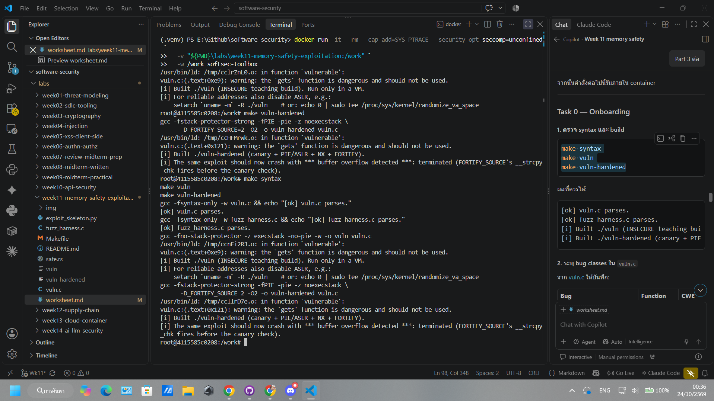
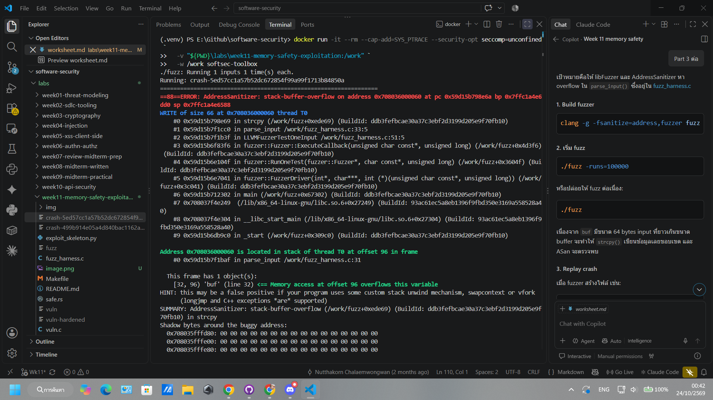

Course: Software Security (KOSEN69) · Week 11 Aligned: CWE-121 (stack-based buffer overflow) · CWE-787 (out-of-bounds write) · CWE-134 (externally-controlled format string) · CWE-242 (dangerous
gets) Signature game: 💥 Fuzzing Race → Pwn the BinaryEthics note: The binaries built from
vuln.care intentionally exploitable andwin()spawns/bin/sh. Build and run them only inside the isolated toolbox container (or a VM) — never on your host. Never run these on a machine you care about, and never aim these techniques at software you are not authorized to test.
| Name | Student ID | Date | Group |
|---|---|---|---|
| Siravit Thakaew | 6631503041 | 24/10/2569 |
Draw the x86-64 stack frame for parse_input() in vuln.c (buf[64], saved RBP, saved return address). Where does strcpy start writing and which word must the exploit overwrite?
Why is gets() (CWE-242) impossible to use safely, and why did C11 remove it from the standard library?
The gets() function reads input from stdin without an argument to specify the buffer size; consequently, it has no way of knowing how much space remains in the destination buffer. If a user provides input that exceeds the buffer's capacity, the data will overwrite adjacent memory—such as the saved frame pointer or the return address.
Because the function's own API lacks built-in safeguards, it is impossible to use gets() safely, even with the utmost caution from the programmer. For this reason, gets() was removed from the C standard library as of the C11 standard. Instead, fgets() should be used, with the buffer size explicitly specified.
printf(user_input) dangerous but printf("%s", user_input) safe? What can %n do?printf(user_input); This line allows the user to directly control the format string. If the input is: %x %x %p printf() attempts to read values from the stack, which can lead to the leakage of data from memory.
Furthermore, the %n specifier allows printf() to write the number of characters printed so far to a specified memory address; this can be exploited to modify memory and alter the control flow.
The correct format is: printf("%s", user_input);
In this case, the format string is fixed as %s, and user input is treated as plain data; therefore, sequences such as %x, %p, and %n within the input are not processed as format specifiers.
make vuln-hardened) — stack canary, PIE/ASLR, NX/DEP, FORTIFY — and say which one each defeats: ret2win, shellcode-on-stack, return-address overwrite detection.| Mitigation | หน้าที่ | สิ่งที่ช่วยหยุด |
|---|---|---|
| Stack canary | Store the special value—such as a saved return address—beforehand, and verify whether that value has been altered before returning. | Detect return address overwriting |
| PIE + ASLR | This causes the locations of code and functions—such as win()—to change with each run. | Renders the hard-coded WIN_ADDR unusable. |
| NX/DEP | Make the stack and certain parts of memory non-executable. | Prevent shellcode-on-stack |
| FORTIFY_SOURCE | Add runtime/compile-time checks to functions like strcpy() when the compiler knows the buffer size. | Detect and stop buffer overflows before they reach the canary in this build. |
As a result, a payload that works against a "teaching build" (vulnerable version) will not function the same way against a "vuln-hardened" version; you might encounter a message such as:
*** buffer overflow detected ***: terminated
In this case, FORTIFY has detected an overflow during a strcpy() operation—occurring before the function returns and prior to the stack canary check in the function epilogue.
safe.rs, explain why CWE-121 is impossible in safe Rust, not merely harder.In safe.rs, data is read into a String—a growable structure rather than a fixed-size 64-byte stack buffer—thereby avoiding the risk of copying large amounts of data into a small buffer, as occurs with strcpy() in C.
Furthermore, Rust performs bounds checking on arrays and slices during every access. If an out-of-bounds access is attempted, the program terminates safely instead of overwriting memory or return addresses. Additionally, the ownership and borrow-checking system prevents the use of raw memory in a way that would be unsafe.
Consequently, vulnerabilities such as CWE-121 and CWE-787 cannot occur in this "safe" Rust code; this entire class of bugs is effectively prevented by the language’s design and its runtime safety guarantees. Nevertheless, the use of unsafe code, Foreign Function Interfaces (FFI), or dependencies containing vulnerabilities can still reintroduce memory safety risks.
Learning goals: Find the overflow with a coverage-guided fuzzer, exploit it (ret2win), watch mitigations break the exploit, then port the routine to safe Rust.
Prerequisites: the toolbox container (bundles clang+libFuzzer, gdb, objdump, python3) — Apple clang has no libFuzzer and gdb is painful on macOS, so do this week in the container. (pip install pwntools and rustc inside as needed; an isolated Linux VM also works.)
Environment setup
# from the repo root, build the toolbox once, then open a shell IN this week's folder:
docker build -t softsec-toolbox labs/toolbox
docker run -it --rm --cap-add=SYS_PTRACE --security-opt seccomp=unconfined \
-v "$PWD/labs/week11-memory-safety-exploitation":/work -w /work softsec-toolbox
# --- inside the container ---
make vuln # teaching build: mitigations OFF
make vuln-hardened # mitigations ON
clang -g -fsanitize=address,fuzzer fuzz_harness.c -o fuzz # libFuzzer + ASan
setarch `uname -m` -R ./vuln # disable ASLR for repeatable addresses
What to submit per task: the exact command(s) + crash/exploit output, a screenshot, and a 2–3 sentence mitigation note tied to the CWE.
Run make syntax (parses both C files even on macOS) and confirm make vuln / make vuln-hardened build. Read the bug-class banner in vuln.c.
Deliverable: build output + the list of CWEs vuln.c claims to demonstrate.

Stack-based buffer overflow จาก strcpy() parse_input() CWE-121 Out-of-bounds write parse_input() CWE-787 Format-string vulnerability format_bug() CWE-134 การใช้ฟังก์ชัน gets() ที่อันตราย vulnerable() CWE-242
This program contains a vulnerability stemming from the copying of an input of unrestricted size into a 64-byte buffer using strcpy(). It also employs gets(), which reads data without performing any size checks. Furthermore, the format_bug() function passes user input directly as a format string, resulting in a format-string vulnerability.
Goal: Make libFuzzer + AddressSanitizer crash on the strcpy overflow in parse_input() — CWE-121/787.
Steps:
./fuzz -runs=100000 (or just ./fuzz).stack-buffer-overflow inside parse_input and the saved crash-<hash> file../fuzz crash-<hash>.
Deliverable: the ASan crash summary + the byte length of the crashing input + mitigation note.
crash-5ed57cc1a57b52dc672854f99a99f1713b84850a
libFuzzer generates an input that exceeds the size of buf[64], causing strcpy() to overwrite data on the stack; ASan reports this as a stack-buffer-overflow. This vulnerability corresponds to CWE-121 and CWE-787, as the program fails to verify the size of the input before performing the copy operation.
Goal: Overwrite the saved return address so the binary returns into win() and prints FLAG{stack_smashing_for_fun_and_education} — CWE-121.
Steps:
win()'s address: objdump -d vuln | grep '<win>:' (or gdb -batch -ex 'p win' ./vuln).cyclic(200), crash in gdb, cyclic_find the value in RIP. (On an Apple Silicon/arm64 Mac the toolbox has no platform pin, so it builds as an aarch64 container — there is no RIP; use info registers pc / p/x $pc instead, and expect SIGBUS, not SIGSEGV. The offset itself is still 72 here.)exploit_skeleton.py: set WIN_ADDR to the address from step 1, confirm OFFSET.python3 exploit_skeleton.py (pwntools path) — or python3 exploit_skeleton.py | ./vuln. (On arm64: the flag still prints, but the process then loops forever re-printing [+] win() reached instead of exiting — ARM64 keeps the return address in register x30, which still holds win()'s own address when it starts, so win()'s ret returns into itself. Expected; Ctrl-C once you've captured the flag.)
Deliverable: the verified OFFSET, your WIN_ADDR, and the printed flag / [+] win() reached line.WIN_ADOR = 0x401196
I verified that the offset from the beginning of buf to the saved return address was 72 bytes using a cyclic pattern and a marker payload. The address of win() in my non-PIE teaching build was 0x401176, obtained with objdump -d vuln | grep '
stack-frame
Goal: Observe modern mitigations defeating the same payload. Steps:
./vuln-hardened.*** buffer overflow detected ***: terminated (FORTIFY_SOURCE's __strcpy_chk, which on this build catches the overflow before the stack canary's epilogue check ever runs), or a SIGSEGV at a randomized address (PIE/ASLR makes WIN_ADDR wrong).
Deliverable: the crash message + a note explaining which mitigation fired and why the fixed WIN_ADDR no longer works.make vuln-hardened
python3 -c "import struct,sys; sys.stdout.buffer.write(b'A'*72 + struct.pack('<Q',0x401176) + b'\n')" | ./vuln-hardened
*** buffer overflow detected ***: terminated Aborted
The original exploit fails against a hardened build because FORTIFY_SOURCE injects checks into strcpy(); it detects that the data exceeds the size of buf[64] before the function returns, immediately terminating the program with a "buffer overflow detected" message. Meanwhile, a stack canary detects any overwriting of the stack toward the end of the function, and PIE/ASLR ensures that the address of win() is not constant—rendering the original WIN_ADDR value unreliable.
Goal: Show the bug class disappears in safe Rust using safe.rs.
Steps:
rustc safe.rs && ./safe, then python3 -c "print('A'*5000)" | ./safe — note it never overflows or crashes.printf '%%x %%n' | ./safe — note the program just reports the character count with no crash and no stack leak; the input is treated as ordinary data (CWE-134 impossible: println!'s format string must be a compile-time literal, so println!(line) would not even compile).String/&str + bounds checks make CWE-121/787 impossible.
Deliverable: the safe output for both inputs + a 3–4 sentence explanation tying it to the CISA memory-safe roadmap.rustc safe.rs -o safe python3 -c "print('A'*5000)" | ./safe
Hello, your input was 5000 characters long.
printf '%%x %%n' | ./safe %x %n Hello, your input was 5 characters long.
In Rust’s safe code, a String is a dynamically resizable data structure—unlike a fixed-size 64-byte buffer in C—which ensures that a 5000-byte input cannot overflow into the saved frame pointer or return address. Furthermore, Rust employs bounds checking for array and slice access, while its ownership and borrow checker mechanisms prevent unsafe pointer usage. Consequently, vulnerabilities such as CWE-121 and CWE-787 cannot occur in this context. Regarding CWE-134, the format string for println! must be a compile-time string literal; user input is passed via {} placeholders as plain data, making it impossible for a user to control the format string itself. This approach aligns with the CISA memory-safe roadmap, which advocates for the use of memory-safe programming languages to mitigate risks at the design stage, rather than relying solely on the types of mitigations typically used in C.
vuln.c | CWE | mitigation that stops it (canary / PIE / NX / Rust).| Criterion | Weight |
|---|---|
| Lecture questions (Part 2) | 20 |
| Exploitation + evidence (Tasks 1–3: fuzz crash, ret2win flag, hardened break) | 40 |
| Defense (Task 4: Rust rewrite + explanation) | 25 |
| Reflection (Part 4: mapping, breach, best mitigation) | 15 |
| Total | 100 |
printf '%s | %s | ' "$(whoami)" '<YOUR-STUDENT-ID>'; date '+%F %T %Z' in the
same image as the evidence. When the evidence is a browser page, a DevTools panel or a
rendered response, put that terminal beside the browser and capture the whole screen — a
cropped window carries nothing that identifies you, and the lab's own output is
byte-identical for the whole cohort by design, so the stamp is the only thing that makes
the shot yours. Generic or borrowed evidence is not accepted.AI is a power tool you must distrust — you are graded on your critique, not the AI's answer.
Disclose your AI use in the Part 1 table. This task counts toward your Defense + Reflection score.
A. Explain in Plain English (EiPE). In 2–3 sentences, in your own words, describe what this week's vulnerable code/endpoint actually does and why it is exploitable — explain the mechanism, don't dump jargon.
B. Prompt Problem. Write a single prompt that makes an AI produce a correct, secure fix for one finding. Run it: does the exploit now fail? If not, refine the prompt and try again. Submit the final prompt + the verified result. Graded on the prompt's precision and your verification — this trains problem decomposition and AI literacy (Denny et al. 2024).